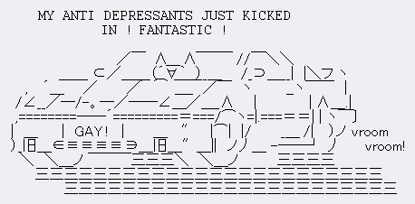

by jess from jess.dog
hi!!! im jess im 19 and i like computers and music!!! and this is my webbed site!
im finally deciding on a layout for here so stay tuned in! i have alot of idea for stuff :3

yup this is wheat im choosing to dump my free time into. sighhh